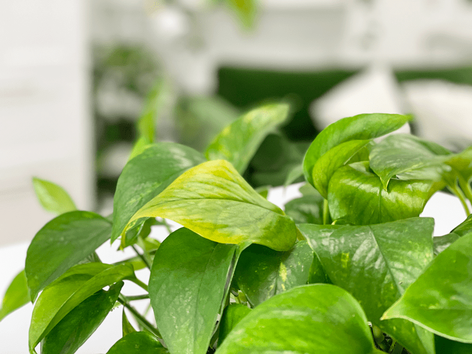
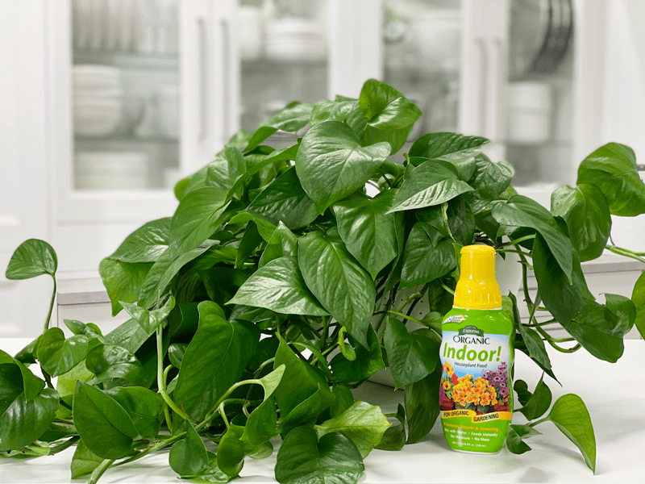

Pothos Plant | My Leaves are Turning Yellow?!
When I see yellow leaves on my pothos, the first thing I think is… NOOOO! WHY???!!!! NOOOO! (I fall to my knees and extend my hands to the heavens.) WHY??? I get a bit dramatic. After the shock has worn off, I put on my detective hat and go straight to work, trying to find the underlying cause. While pothos plants are easy to grow and are known for being reasonably durable, they require immediate attention when they are unhappy. Just like our bodies, when dis-ease sets in…symptoms start to pop up, and it’s time to take note!

To reverse the problem of yellowing leaves, you may only need to do something as simple as moving your plant to a different area or changing your watering and/or fertilizing strategies. Be prepared to act fast to ensure a healthier and happier pothos. Below, I will be talking about all the possibilities, such as overwatering, underwatering, mineral deficiency, fertilizer, lighting, temperature stress, and natural plant aging.
Why Are My Leaves Turning Yellow?
Plants don’t have facial expressions, so they can’t express discomfort or displeasure the way we can. It’s up to us to figure out what they are trying to tell us. The yellowing of leaves is a question that I Googled over and over. I was looking for a simple answer so I could immediately fix the problem. But when it comes to troubleshooting a plant issue, I have learned that I need an ample amount of patience! Like many things in life, there isn’t a black and white answer or a quick fix. Instead, it requires a little or sometimes a lot of investigative work. As you read through the many possibilities, do so with grace and ease. Don’t start to panic or become overwhelmed. It’s a process, and we’ve all been there.

The plant above came to me with a lot more white variegation than green in the leaves. I struggled to find enough indirect light in my house, so it has started to shift to more green in the leaves. That’s okay with me, but I thought I would point it out for you.
Too Much Exposure to Direct Sunlight
While pothos, like all other houseplants, require a certain amount of sunlight, they don’t actually like direct sunlight. Too much direct sunlight can result in the leaves showing signs of burning.
Pothos are known for being low-light plants and can do well in shady spots. That can be confusing for people to wrap their heads around, because you will read that you need to ensure that it gets sufficient indirect (operative word being indirect!) bright light. Well, what the heck, Amie Sue?! Which is it? Here’s a good rule of thumb…
Harsh, direct sunlight will scorch the leaves, while too little light will cause the leaves to lose their variegation. For indoor plants, indirect sunlight is the weak sunlight that reaches a potted plant placed at least 3 feet away from a sunny window. You don’t need to position your pothos in a stream of sunlight or right by a window. Simply place it in a room that receives sufficient natural light daily. If your pothos is set in the sun and the leaves are changing color, move it to a shadier spot. Alternatively, you can hang a sheer curtain in the window to filter the amount of light that the houseplant gets.
Solution:
- Move the plant. It sounds too simple, but it’s amazing how much people are afraid to move their plants around. I have had plants look like they just aren’t going to make it, and by moving to a different location, they perked right back up.
- If you have windows that allow direct sunbeams into the house, you will want to avoid the areas where the sun hits.

Too Much Fertilizer
Frequently people tend to use too much fertilizer on their plants to make them grow faster, but what it actually does is create a toxic environment which “burns” the leaves, causing them to turn yellow. Any good quality, balanced houseplant fertilizer can be used, but it is essential not to use too much or to use one that has the incorrect nutrients for your plant.
Solution:
- If you overfeed a plant, you can remove it from its current soil and repot it in fresh soil. This technique is undoubtedly the best way to get rid of the excess nutrients affecting your plant.
- Alternatively, you can flush the soil, which involves drenching the soil with water and letting it drain out. Repeat this several times to help the soil get rid of excess fertilizer.
Irregular Yellowing or Leaf Deformities
Mineral Deficiency
Irregular yellowing or leaf deformities are usually caused either by a pest or a mineral deficiency. If no pests are seen, then this is likely caused by a mineral deficiency, usually calcium or boron. Some specific nutrient symptoms are: (courtesy of NYBG Plant Information Plant Service)
- Nitrogen (N) – The first symptom observed is that the older leaves turn pale green and then yellow, beginning at the tips of the leaves. Eventually, the whole plant will become paler in color and will not thrive.
- Phosphorus (P) – Beginning with the older leaves, the plant will be dark green or assume a reddish cast. There may be necrotic (dying) spots.
- Magnesium (Mg) – Leaves show yellow areas (chlorosis) between the veins, followed by necrosis (dead areas).
- Potassium (K) – The oldest leaves will die, starting at their tips and proceeding along the margins of the leaves.
- Calcium (Ca) – The tips of the plant stop growing, and the plants show a tendency to wilt.
- Iron (Fe) – The leaf surfaces become yellow, but the veins remain green.
Solution:
- Choose a fertilizer that contains both calcium and boron, and fertilize once a month.
- There are other factors with a mineral deficiency that also include weak growth, failure to flower, change in coloration of the leaves, and browning of the leaf tips.

Yellow Leaves Fading to Green or Bright Yellow
Overwatering
If yellow leaves are found all over the plant, overwatering is a likely culprit. Wet soil, blackened stems toward the base, and fungus gnats are signs that your plant is overwatered. Usually, lower leaves drop first, although the whole plant may be affected.
We tend to think of overwatering as just adding too much water to a plant’s potting mix, but what’s really going on is that the surrounding soil is not drying out fast enough. It may very well be from too much water, but it may also be from not enough natural sunlight. If you water a plant with the appropriate amount of water, but it doesn’t get enough sunlight, then the potting mix will stay moist. The best way to keep a plant from being overwatered is to give the plant water only when the potting mix is dry and to give it enough light and warmth to help dry out efficiently.
The result is that poor drainage and too much water results in the soil remaining wet. The roots of the pothos will start to rot if this happens too frequently. Once the roots begin to rot, the absorption of water and nutrients is negatively impacted. Then your plant won’t get the food and nutrients it needs to thrive and grow. With a lack of fluids, the leaves will start to turn yellow, brown, or black and might even fall off.
Solution:
- Make sure the pot that your plant is in has drainage holes, so the soil doesn’t become waterlogged.
- If you feel that this is the case with your plant, stop watering the plant and let the soil dry out before you water the plant again. To test if the plant is ready for watering, push your index finger halfway into the soil. If it comes out wet, don’t water the plant just yet.
- If your finger is dry, you can water the plant. Allow the water to drain into the saucer and then dump the excess water. Letting the plant sit in a saucer of water can also lead to root rot…and attract fungus gnats.
 Yellow Leaves Curling Inward and Drooping Leaves
Yellow Leaves Curling Inward and Drooping Leaves
Underwatering
When there’s the chance of overwatering, then you have to know that underwatering is a possibility too! If you have unpotted the plant and checked the roots only to find no root rot, the leaves of your house plant could be turning yellow because it is being underwatered.
The symptoms of overwatering and underwatering a houseplant are very often similar. When water is lacking, a plant will start to conserve supplies and energy. In most instances, this leads to the leaves yellowing and then dropping off the plant.
Whole Plant Yellowing – Possible Leaf Drop
Exposure to Cold or Hot Temperatures
Pothos thrive in a temperature that is well regulated. They prefer average to warm temperatures of 65-85 degrees. Do not expose them to temperatures below 65 degrees even for a short time, because cold air will damage the foliage. If the temperature is too cold or too hot, you will see more of a pale yellow or whitish-yellow color in the leaf.
Solution:
- In the summer, move plants away from direct air conditioner vents.
- In the winter, move plants away from heat vents and/or fireplaces.
- Remove plants from window sills if it is cold outside; otherwise, the plant will be exposed to cold drafts.
- Be mindful of where you place your houseplant, and you can avoid yellow leaves from fluctuating temperatures.
- If no obvious temperature causes are present and the soil seems normal, try fertilizing.
Repotting a Plant
One thing that I have noticed is that some of my plants don’t handle being repotted as well as others. They can go into a state of shock, but 99% of the time, they bounce back with a little time and love.
Solution:
- If possible, wait until the growing season so that actively growing roots will have enough time to grow into the newly added potting mix. If you live in a four-season climate, you will want to do all of your repotting during spring and fall. In the winter, most plants go dormant and just want to be left alone…well, at least as to repotting and pruning. Keep watering and caring for them during this time.
- Water the plant the day before, or at least a few hours before you plan on repotting it.
- I like to wet the potting mix prior to repotting houseplants to ensure that the potting mix will absorb water evenly.
Sometimes yellowing leaves are not a sign of a serious problem – it could be completely normal, the natural cycle of the plant’s life. As many plants age, the lower leaves will turn yellow and drop off. This is simply a normal part of their growth. It is especially true of foliage plants such as Dieffenbachia and Dracaena, which are popular types of houseplants.
Many houseplants, not just pothos, shed older leaves to make way for new foliage. This is okay and should be considered reasonable if it is the older leaves, near the bottom of the stem that are yellowing and then falling off. If it’s the upper leaves turning yellow… revisit the possible reasons listed above.
© AmieSue.com